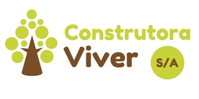

Esses são os projetos que eu já realizei
Projeto Construtora Viver S/A - Análise e Desenvolvimento
A Construtora Viver S/A é uma empresa fictícia utilizada na disciplina de Engenharia de Software do Curso Técnico em Informática do IFSC Câmpus Chapecó. Ela foi pensada como um estudo de caso, inicialmente para análise de sistemas, e posteriormente para implementação na disciplina de Programação Orientada a Objetos II. Seu sistema foi pensado de modo simples e funcional, permitindo ao escritório manter os registros de funcionários, obras, orçamentos e materiais em estoque. Como resultados, obteve-se a documentação de requisitos, de casos de uso, diagramas de classe e de atividade. Também foi implementado o presente sistema em Java desktop para a disciplina supracitada e, como forma de estudo individual, implementei-o utilizando o Entity Framework.
Projeto +Idoso - Análise e Desenvolvimento
O Projeto +Idoso foi pensado com o intuito de auxiliar pessoas da terceira idade com os cuidados diários da sua saúde, criando lembretes e avisos de forma simples para ajudá-los a monitorar os seus medicamentos, práticas de atividades físicas e cuidados com alimentação. Nesse sentido, a aplicação foi desenvolvida com base em pesquisas relacionadas às necessidades dos idosos, sendo utilizadas as linguagens de marcação HTML e CSS e para implementação o PHP. Como resultados, evidenciou-se a importância da aplicação +Idoso, já que a mesma melhora a qualidade de vida dos usuários, auxiliando-os no cotidiano em suas atividades e horários.

Projeto Smith Advogados - Desenvolvimento
Smith Advogados é uma empresa fictícia criada na disciplina de desenvolvimento WEB II do Curso Técnico em Informática do IFSC Câmpus Chapecó. Ela foi pensada como um estudo de caso para desenvolvimento e prática de front-end em aplicações WEB.

Projeto TheRoute - Desenvolvimento
O projeto TheRoute efetua estudo, pesquisa e experimentação a volta do desafio de geração automática de rotas de turismo, patrimônio, arte e cultura no norte de Portugal. A aplicação móvel The Route é um guia turístico da cidade do Porto, sempre com informações detalhadas e atualizadas. Para além de poder seguir as rotas predefinidas, o usuário também poderá criar a sua própria rota.

Projeto Transportadora - Análise
O Projeto Transportadora foi realizado na disciplina de Análise e Desenvolvimento de Sistemas do Curso Técnico em Informática do IFSC Câmpus Chapecó. Ele foi pensado como um estudo de caso de análise de sistemas. Como resultados, obtiveram-se as documentações de requisitos, de casos de uso e os diagramas de atividade.